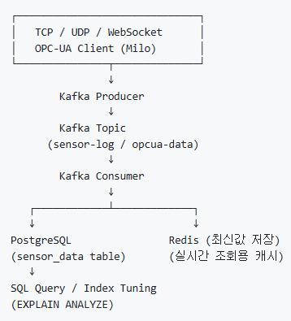
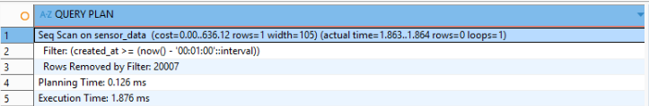
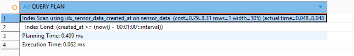

공장/설비 환경에서 발생하는
다양한 형태의 데이터를
하나의 표준 메시지로 수집하고 안정적으로 저장
GitHub 산업 데이터 시스템 프로젝트

1. 다양한 산업 프로토콜 통합 (TCP / UDP / WebSocket / OPC-UA)
2. Kafka를 통한 비동기 메시징 처리
3. 로그성 데이터 저장을 고려한 DB사용
4. EXPLAIN ANALYZE 기반 SQL 성능 튜닝 실습
1. 다양한 프로토콜을 통해 수집된 데이터를 SensorMessage DTO로 표준화
2. Kafka Producer를 통해 Topic에 메시지 발행
3. Kafka Consumer가 메시지 수신
4. PostgreSQL에 로그성 데이터 저장
5. Redis에 센서 최신값 저장 (실시간 조회용 캐시)
6. EXPLAIN ANALYZE 기반 인덱스 유무 성능 비교 실습
- 20,000건 샘플 데이터 Insert
- created_at 인덱스 전/후 비교
- Seq Scan → Index Scan 전환 및 조회 성능 개선
{
"protocol": "HTTP",
"sourceId": "test-controller",
"type": "log",
"timestamp": 1767799956344,
"payload": {
"msg": "sensor test message"
}
}
